Snakes of Philippines
117 snake species are recorded in the Philippines in SnakeList: 39 venomous and 78 non-venomous, from 9 families.
- 117species
- 39venomous
- 78non-venomous
- 9families
These totals count the snakes SnakeList records as living in the Philippines. A species counts if it is recorded anywhere in the country, so not every snake lives in every region.
Species
Showing 117 species
- No photo yetAlcala's Reed SnakeCalamaria alcalai
 Alcala's Wolf SnakeLycodon alcalai
Alcala's Wolf SnakeLycodon alcalai- No photo yetAndy’s Blind SnakeMalayotyphlops andyi
 Annulated Sea SnakeHydrophis cyanocinctus
Annulated Sea SnakeHydrophis cyanocinctus- No photo yetBalbalan Blind SnakeAcutotyphlops banaorum
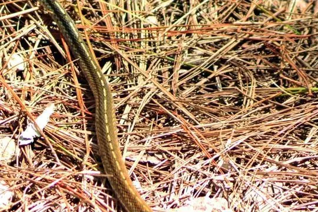
Barbour's Water SnakeRhabdophis barbouri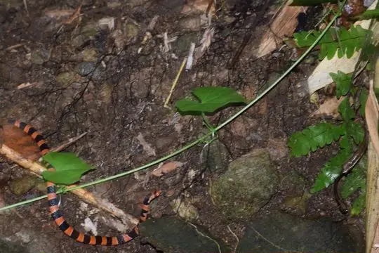
Barred Coral Snake (calligaster)Hemibungarus calligaster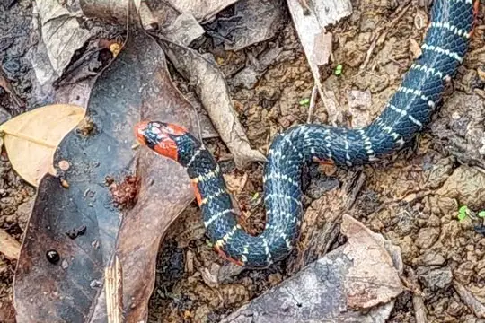
Barred Coral Snake (gemianulis)Hemibungarus gemianulis- No photo yetBelcher's Sea SnakeHydrophis belcheri
 Black-headed seasnakeHydrophis atriceps
Black-headed seasnakeHydrophis atriceps Blunthead Slug SnakeAplopeltura boa
Blunthead Slug SnakeAplopeltura boa Boie's Dwarf SnakeCalamaria virgulata
Boie's Dwarf SnakeCalamaria virgulata- No photo yetBoie's KeelbackRhabdophis spilogaster
- No photo yetCebu Island Worm SnakeMalayotyphlops hypogius
 Chinese Sea SnakeLaticauda semifasciata
Chinese Sea SnakeLaticauda semifasciata Collared Reed Snake (leucogaster)Calamaria leucogaster
Collared Reed Snake (leucogaster)Calamaria leucogaster- No photo yetCollared Worm SnakeMalayotyphlops collaris
 Common Mock ViperPsammodynastes pulverulentus
Common Mock ViperPsammodynastes pulverulentus Common sea kraitLaticauda laticaudata
Common sea kraitLaticauda laticaudata Common Wolf Snake (capucinus)Lycodon capucinus
Common Wolf Snake (capucinus)Lycodon capucinus- No photo yetCommon Wolf Snake (solivagus)Lycodon solivagus
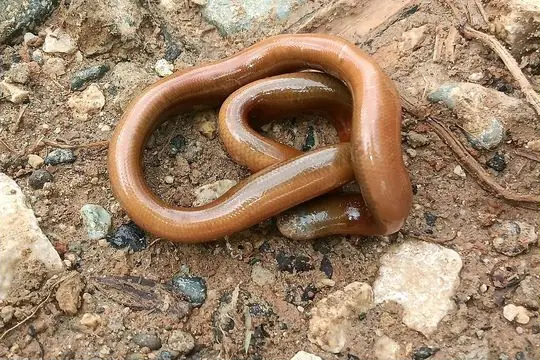
Cuming's Blind SnakeRamphotyphlops cumingii- No photo yetDinagat Island Banded CoralsnakeCalliophis salitan
 Dog-toothed Cat SnakeBoiga cynodon
Dog-toothed Cat SnakeBoiga cynodon Duméril's Wolf SnakeLycodon dumerilii
Duméril's Wolf SnakeLycodon dumerilii Egg-eating Sea SnakeEmydocephalus annulatus
Egg-eating Sea SnakeEmydocephalus annulatus- No photo yetEverett's Reed SnakeCalamaria everetti
- No photo yetFaust's Wolf SnakeLycodon fausti
 Ferron's Wolf SnakeLycodon ferroni
Ferron's Wolf SnakeLycodon ferroni- No photo yetGary's Mountain KeelbackOpisthotropis alcalai
 Gerard's water snakeGerarda prevostiana
Gerard's water snakeGerarda prevostiana Gervais' Reed SnakeCalamaria gervaisii
Gervais' Reed SnakeCalamaria gervaisii Gold-ringed Cat Snake (dendrophila)Boiga dendrophila
Gold-ringed Cat Snake (dendrophila)Boiga dendrophila Gray Bronzeback (modestus)Dendrelaphis modestus
Gray Bronzeback (modestus)Dendrelaphis modestus Günther's Dwarf Reed SnakePseudorabdion oxycephalum
Günther's Dwarf Reed SnakePseudorabdion oxycephalum- No photo yetHardwicke's Spine-bellied SeasnakeHydrophis hardwickii
- No photo yetJolo Worm SnakeCalamaria joloensis
 Keeled Rat SnakePtyas carinata
Keeled Rat SnakePtyas carinata King CobraOphiophagus hannah
King CobraOphiophagus hannah- No photo yetLake Buhi BockadamCerberus microlepis
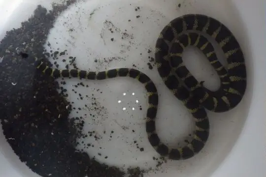
Lake Taal SnakeHydrophis semperi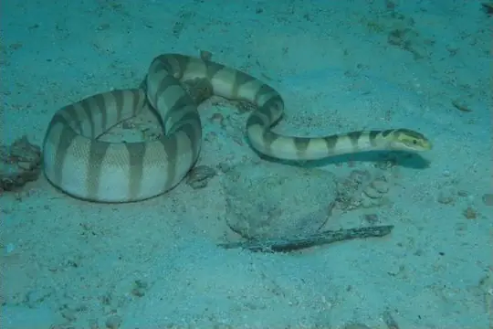
Lambert's Sea SnakeHydrophis lamberti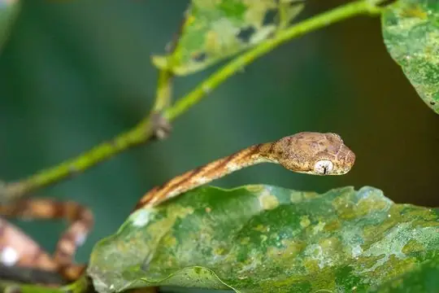
Leyte Cat SnakeBoiga angulata Luzon BronzebackDendrelaphis luzonensis
Luzon BronzebackDendrelaphis luzonensis Luzon Dwarf SnakeCalamaria bitorques
Luzon Dwarf SnakeCalamaria bitorques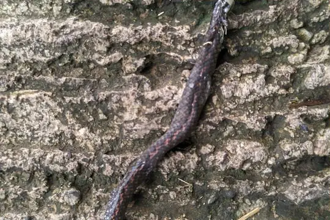
Luzon Kukri SnakeOligodon modestus- No photo yetLuzon Worm SnakeMalayotyphlops luzonensis
 Malayan Banded Wolf SnakeLycodon subcinctus
Malayan Banded Wolf SnakeLycodon subcinctus- No photo yetManila Wolf SnakeLycodon tessellatus
- No photo yetManila Worm SnakeMalayotyphlops manilae
 Maren's BronzebackDendrelaphis marenae
Maren's BronzebackDendrelaphis marenae- No photo yetMarx's Worm SnakeRamphotyphlops marxi
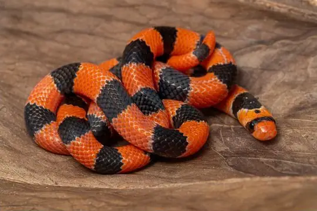
McClung's Philippine Coral SnakeHemibungarus mcclungi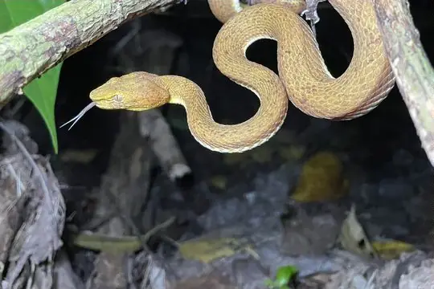
McGregor's pitviperTrimeresurus mcgregori- No photo yetMcnamara's Burrowing SnakePseudorabdion mcnamarae
- No photo yetMountain Burrowing SnakePseudorabdion montanum
 Muller's Wolf SnakeLycodon muelleri
Muller's Wolf SnakeLycodon muelleri Müller's Ground SnakeStegonotus muelleri
Müller's Ground SnakeStegonotus muelleri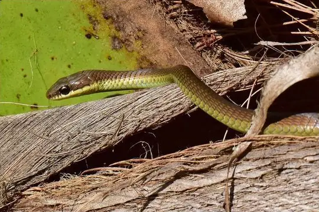
Negros BronzebackDendrelaphis fuliginosus- No photo yetNegros Island Worm SnakeGerrhopilus hedraeus
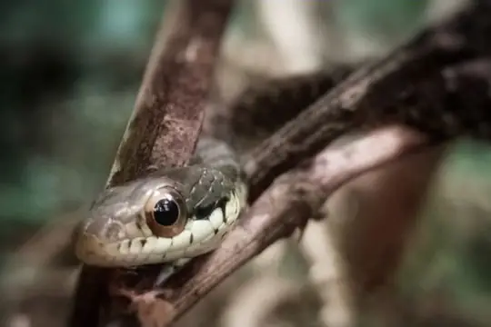
Negros Spotted Water SnakeTropidonophis negrosensis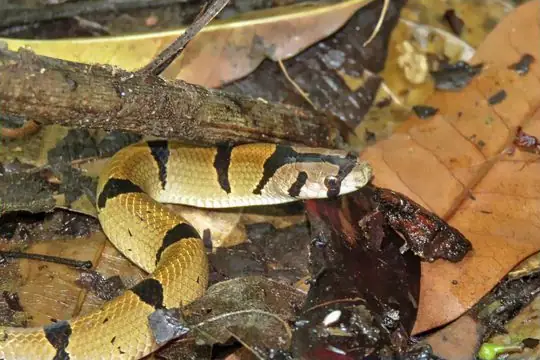
Northern Short-headed SnakeOligodon ancorus Olive Blind SnakeRamphotyphlops olivaceus
Olive Blind SnakeRamphotyphlops olivaceus Olive Mountain KeelbackOpisthotropis typica
Olive Mountain KeelbackOpisthotropis typica Ornate Sea SnakeHydrophis ornatus
Ornate Sea SnakeHydrophis ornatus- No photo yetOta's Wolf SnakeLycodon bibonius
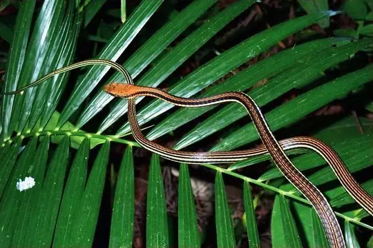
Palawan bronzebackDendrelaphis levitoni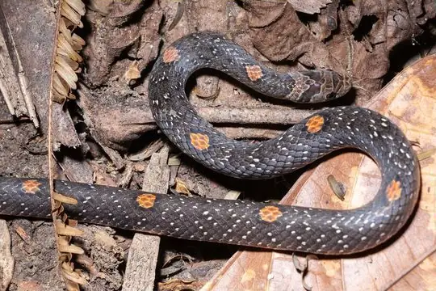
Palawan Kukri SnakeOligodon notospilus- No photo yetPalawan Worm SnakeCalamaria palawanensis
- No photo yetPanay Island Reed SnakePseudorabdion talonuran
 Paradise Tree SnakeChrysopelea paradisi
Paradise Tree SnakeChrysopelea paradisi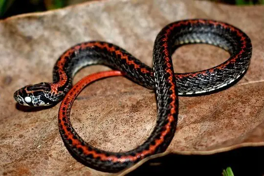
Perkin's Short-headed SnakeOligodon perkinsi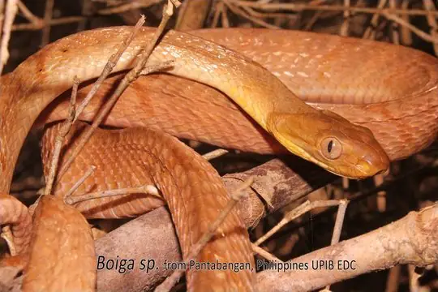
Philippine Cat SnakeBoiga philippina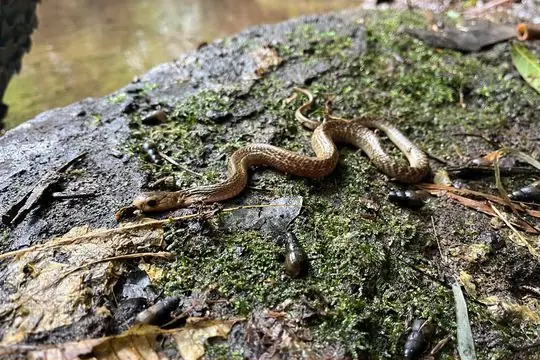
Philippine CobraNaja philippinensis Philippine Coral SnakeCalliophis philippinus
Philippine Coral SnakeCalliophis philippinus Philippine DryocalamusLycodon philippinus
Philippine DryocalamusLycodon philippinus Philippine DryophiopsDryophiops philippina
Philippine DryophiopsDryophiops philippina- No photo yetPhilippine Liopeltine SnakeLiopeltis philippina
 Philippine pitviperTrimeresurus flavomaculatus
Philippine pitviperTrimeresurus flavomaculatus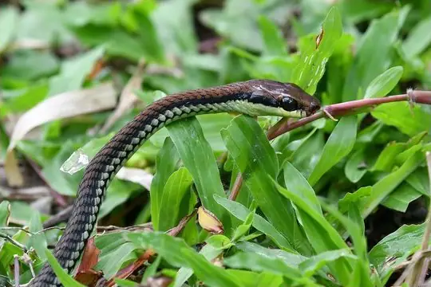
Philippines BronzebackDendrelaphis philippinensis- No photo yetPlain SeasnakeHydrophis inornatus
- No photo yetRed Worm SnakeMalayotyphlops ruber
- No photo yetRed-headed Worm SnakeMalayotyphlops ruficauda
 Reddish Rat Snake (erythrurus)Coelognathus erythrurus
Reddish Rat Snake (erythrurus)Coelognathus erythrurus Reddish Rat Snake (philippinus)Coelognathus philippinus
Reddish Rat Snake (philippinus)Coelognathus philippinus Reticulated PythonMalayopython reticulatus
Reticulated PythonMalayopython reticulatus- No photo yetRoss' Wolf SnakeLycodon chrysoprateros
 Samar CobraNaja samarensis
Samar CobraNaja samarensis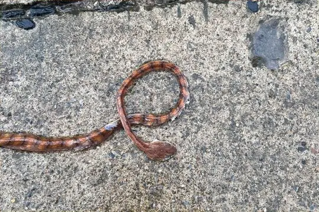
Schultz' Blunt-headed Tree SnakeBoiga schultzei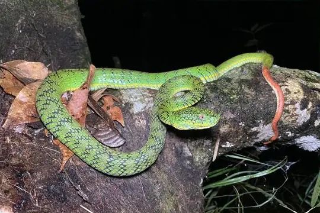
Schultze's Pit ViperTrimeresurus schultzei Seale’s Banded Asian Wolf SnakeLycodon sealei
Seale’s Banded Asian Wolf SnakeLycodon sealei Short Sea SnakeHydrophis curtus
Short Sea SnakeHydrophis curtus- No photo yetSierra Madre Blind SnakeMalayotyphlops denrorum
 Smooth-scaled Mountain Rat SnakePtyas luzonensis
Smooth-scaled Mountain Rat SnakePtyas luzonensis South Philippine Temple PitviperTropidolaemus philippensis
South Philippine Temple PitviperTropidolaemus philippensis Southeast Asian BockadamCerberus schneiderii
Southeast Asian BockadamCerberus schneiderii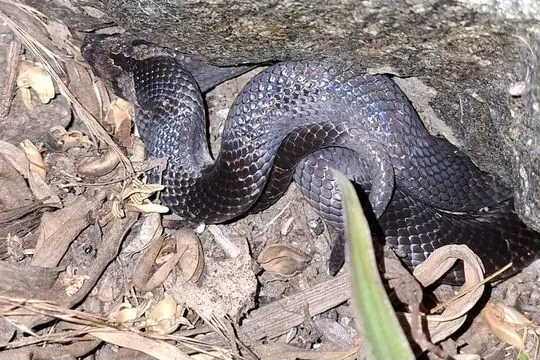
Spotted Kukri SnakeOligodon maculatus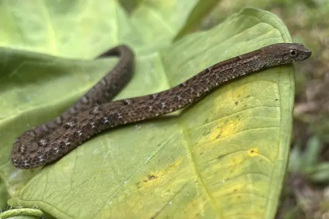
Spotted Water SnakeTropidonophis dendrophiops Striped Coral Snake (intestinalis)Calliophis intestinalis
Striped Coral Snake (intestinalis)Calliophis intestinalis Striped Sea SnakeHydrophis fasciatus
Striped Sea SnakeHydrophis fasciatus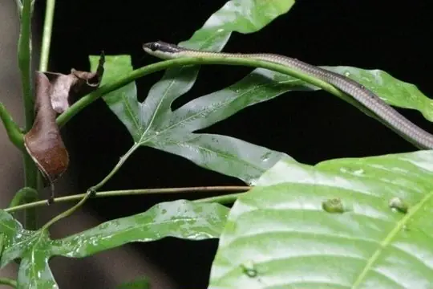
Sulu BronzebackDendrelaphis flavescens- No photo yetSulu Islands Banded Coral SnakeCalliophis suluensis
- No photo yetSulu Islands Worm SnakeRamphotyphlops suluensis
- No photo yetSulu Short-headed SnakeOligodon meyerinkii
- No photo yetTaylor's Burrowing SnakePseudorabdion taylori
- No photo yetTaylor's Worm SnakeMalayotyphlops canlaonensis
 Terrific BronzebackDendrelaphis terrificus
Terrific BronzebackDendrelaphis terrificus Two-stripped Coral SnakeCalliophis bilineatus
Two-stripped Coral SnakeCalliophis bilineatus Variable Reed SnakeCalamaria lumbricoidea
Variable Reed SnakeCalamaria lumbricoidea- No photo yetWhite-lined Water SnakeRhabdophis auriculatus
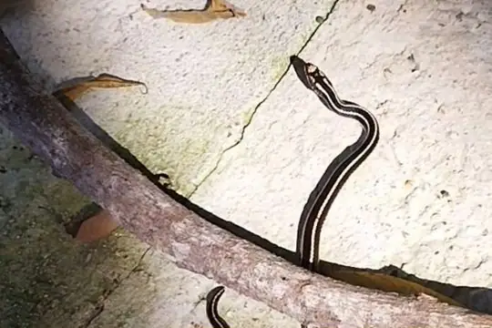
White-striped SnakeSibynophis bivittatus- No photo yetWynn's Worm SnakeMalayotyphlops castanotus
 Yellow Sea SnakeHydrophis spiralis
Yellow Sea SnakeHydrophis spiralis Yellow-bellied Reed SnakeCalamaria suluensis
Yellow-bellied Reed SnakeCalamaria suluensis Yellow-bellied Sea SnakeHydrophis platurus
Yellow-bellied Sea SnakeHydrophis platurus Zamboanga Burrowing SnakePseudorabdion ater
Zamboanga Burrowing SnakePseudorabdion ater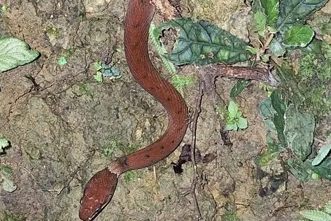
Zigzag-lined Water SnakeRhabdophis lineatus
No snakes in Philippines match.
Philippines’s snakes in numbers
- Families: Colubridae 65, Elapidae 26, Typhlopidae 15, Viperidae 4, Homalopsidae 3, Gerrhopilidae 1, Pareidae 1, Pseudaspididae 1, Pythonidae 1.
- 76 are recorded in no other country in SnakeList: Alcala's Reed Snake, Alcala's Wolf Snake, Andy’s Blind Snake, Balbalan Blind Snake, Barbour's Water Snake, Barred Coral Snake (calligaster), Barred Coral Snake (gemianulis), Boie's Keelback, Cebu Island Worm Snake, Collared Worm Snake, Common Wolf Snake (solivagus), Cuming's Blind Snake and 64 more.
States and provinces
The states and provinces where SnakeList records snakes, with how many species each has. Each page has its families, venomous snakes, the species found only there, its cities and neighbours.
- Autonomous Region in Muslim Mindanao (ARMM) 1 species
- Bicol (Region V) 10 species
- Cagayan Valley (Region II) 8 species
- CALABARZON (Region IV-A) 19 species
- Central Luzon (Region III) 11 species
- Central Visayas (Region VII) 21 species
- Cordillera Administrative Region (CAR) 9 species
- Davao (Region XI) 14 species
- Dinagat Islands (Region XIII) 8 species
- Eastern Visayas (Region VIII) 12 species
- Ilocos (Region I) 2 species
- MIMAROPA (Region IV-B) 24 species
- National Capital Region 3 species
- Northern Mindanao (Region X) 7 species
- SOCCSKSARGEN (Region XII) 3 species
- Western Visayas (Region VI) 14 species
- Zamboanga Peninsula (Region IX) 9 species
No place matches that.
Cities
Its biggest cities, biggest first. Snakes are recorded by state or province, not by city, so each city page shows the snakes of the state or province it is in.
- Quezon City National Capital Region
- Manila National Capital Region
- Caloocan City National Capital Region
- Budta Autonomous Region in Muslim Mindanao (ARMM)
- Davao Davao (Region XI)
- Malingao SOCCSKSARGEN (Region XII)
- Cebu City Central Visayas (Region VII)
- General Santos SOCCSKSARGEN (Region XII)
- Taguig National Capital Region
- Pasig City National Capital Region
- Las Piñas National Capital Region
- Antipolo National Capital Region
- Makati City National Capital Region
- Zamboanga Zamboanga Peninsula (Region IX)
- Bacolod City Western Visayas (Region VI)
- Mansilingan Western Visayas (Region VI)
- Cagayan de Oro Northern Mindanao (Region X)
- Dasmariñas CALABARZON (Region IV-A)
- Pasay National Capital Region
- Iloilo Western Visayas (Region VI)
- San Jose del Monte Central Luzon (Region III)
- Bacoor CALABARZON (Region IV-A)
- Lapu-Lapu City Central Visayas (Region VII)
- Iligan Northern Mindanao (Region X)
- Mandaue City Central Visayas (Region VII)
No place matches that.